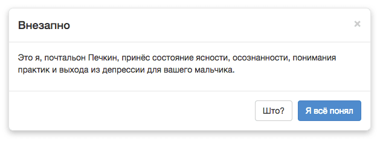
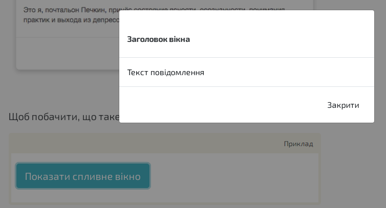

При появі модальне вікно затемнює інші елементи й відображається над всією сторінкою. При створенні вікна не забувайте додавати елементи керування, щоб користувач міг його закрити.
На одній сторінці може бути будь-яку кількість вікон, які будуть працювати незалежно один від одного.
Варто зауважити, що атрибут autofocus не буде працювати у спливних вікнах.
За роботу модуля відповідає файл modal.js, його можна використовувати окремо або разом з іншими елементами (за замовчуванням він включений до складу файлів bootstrap.js і bootstrap.min.js). Щоб отримати можливість користуватися модальними вікнами, потрібно спочатку підключити jQuery.js, а після цього файл модуля або загальний файл з усіма js-модулями Bootstrap.

Щоб побачити, що таке модальне вікно, натисніть на кнопку:

Код прикладу:
<button class="btn btn-info btn-lg" type="button" data-toggle="modal" data-target="#myModal">Показати спливне вікно</button> <div id="myModal" class="modal fade"> <div class="modal-dialog"> <div class="modal-content"> <div class="modal-header"><button class="close" type="button" data-dismiss="modal">×</button> <h4 class="modal-title">Заголовок вікна</h4> </div> <div class="modal-body">Текст повідомлення</div> <div class="modal-footer"><button class="btn btn-default" type="button" data-dismiss="modal">Закрити</button></div> </div> </div> </div>
Виклик вікна:
Щоб показати вікно, можна використовувати кнопку або посилання. Вкажіть для них data-* атрибути вікна:
data-toggle="modal" показує модальне вікноdata-target="#myModal" вказує id вікна, котре треба відкритиБлок “Modal”, контейнер вікна:
<div> модального вікна повинен мати id, такий же, як і атрибут data-target у кнопки або посилання, що викликає це вікно, (в даному випадку це myModal)..modal визначає контент вікна..fade додає ефект плавної появи і затухання вікна. Якщо клас прибрати, вікно буде з’являтися й зникати моментально.role="dialog" використовується на пристроях для людей з обмеженими можливостями. Це може бути screen reader, який озвучує контент сторінки для людей, що погано бачать.modal-dialog встановлює ширину і відступи для вікна.Блок з контентом вікна:
.modal-content додає стилі Bootstrap вікну (бордер, колір фону, тіні тощо). Весь контент модального вікна (заголовок, футер, тексти) має знаходитись всередині цього блоку..modal-header визначає стилі для заголовку спливного вікна. Зверніть увагу: у кнопки <button> всередині цього блоку є атрибут data-dismiss="modal", який використовується, щоб закрити модальне вікно по кліку на кнопці. Клас .close додає стилі кнопці, а клас .modal-title class встановлює стилі для заголовку з потрібною висотою строчки..modal-body це то, ради чего все затевалось, то є контент спливного вікна. Здесь може бути что угодно: текст, изображения, видео і любые другие html-елементы..modal-footer використовується для стилізації нижньої частини вікна. Зверніть увагу: за замовчуванням рівняння тексту тут йде за правим краєм.В бутстрапі передбачено три розміри вікна: звичайний, зменшений та великий.
Щоб змінити размер вікна, до елементу з класом .modal-dialog треба додати .modal-sm для зменшеного або .modal-lg для збільшеного розміру вікна:
<div class="modal-dialog modal-sm">
або
<div class="modal-dialog modal-lg">
Щоб модальне вікно можна було закрити не лише за допомогу кнопки, але й клавішею Esc на клавиатурі, елементу .modal треба додати атрибут tabindex="-1":
<div class="modal fade" tabindex="-1" role="dialog">
Другий варіант: додати атрибут keyboard при виклиці вікна, про це написано нижче.
Крім описаного виклику через кнопку або посилання, також є спосіб запуска вікна за допомоги JavaScript:
$('#myModal').modal(options)
Налаштування модальних вікон можна також передавати як через data-атрибути, так і через JavaScript. Для першого випадку, доавайте ім’я опції data- кнопці або посиланню для виклику вікна:
| Атрибут | Тип | За замовч. | Опис |
|---|---|---|---|
| backdrop | boolean або слово 'static' |
true | Затемнення фону під спливним вікном.
якщо вказати |
| keyboard | boolean |
true | Закриття вікна при натисканні кнопки “Escape”
|
| show | boolean |
true | Показ вікна після ініціалізації |
Ці методи допоможуть вам мати повний контроль над спливними вікнами: показувати або приховувати або міняти стан залежно від поточного.
| Метод | Опис |
|---|---|
.modal(options) |
Створює модальне вікно |
.modal("toggle") |
Міняє видимість вікна |
.modal("show") |
Показує вікно |
.modal("hide") |
Приховує вікно |
Bootstrap дозволяє створювати власні обробники подій модальних вікон. Їх легко налаштувати, є 4 таких події.
| Подія | Опис |
|---|---|
show.bs.modal |
Подія відбувається відразу, як тільки запускається метод show (показ вікна). Якщо ви запускаєте вікно по кліку, то елемент, на якому був клік, доступний через властивість події relatedTarget. |
shown.bs.modal |
Подія відбувається, коли вікно стало повністю видимим для користувача (всі анімації закінчились). |
hide.bs.modal |
Подія відбувається як тільки запускається метод hide. |
hidden.bs.modal |
Подія відбувається після того, как вікно повністю приховується від користувача (після всіх анімацій). |
Приклад події:
$('#myModal').on('hidden.bs.modal', function (event) {
// функції
});
В старіших версіях діяла подія remote, але з 4-ї версії її було видалено.